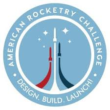

My Resume
Profile
High school student who seeks to minor in computer science. Proficient in Java and hoping to learn HTML and JavaScript.
Education
Jones College Preparatory, Chicago, Illinois
- Unweighted GPA: 3.95
- Weighted GPA: 5.2
- Graduation Date: June 2026
- Advanced Placement courses taken: AP Chemistry, AP Calculus BC, AP English Language, AP Seminar, AP Computer Science A, AP Physics C Mechanics, AP Human Geography, AP Psychology
Skills
- Fluent in Java and Python
- Fluent in French
- Can use 3d printing software like TinkerCad
- Can play guitar, cello, trumpet, and piano
- Experience with power tools
Extracurricular Activities
Argonne Autonomous Vehicle Competition (January 2023-Present)
- Wiring of vehicle
- 3d Design of the shell of the vehicle
- Team work with other members of my team
Intern at GaeaStar (June 2022-Present)
- Learned the basics of material design and chemistry
- Learned how to create speciifc 3d designs to address everyday problems
- Learned how to assemble and operate robotic machinery
Co-President of Rocketry Team and Aerospace Club(2025-Present)
- Researched and created various rockets for a NASA rocketry challenge
- Taught other students about fundamental forces like drag, etc

Image of TAARC rocketry competition logo